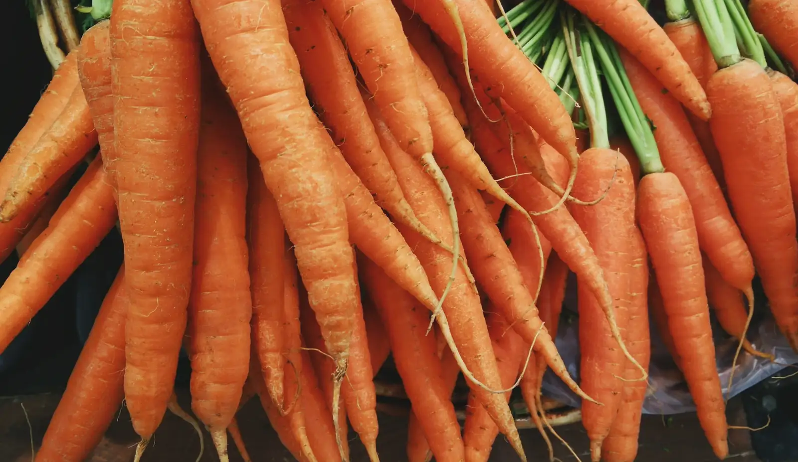

County service area
Broward County wholesale produce delivery
Refrigerated produce routes across Broward County — restaurants, hotels, schools, clubs, and caterers, seven days a week from our Pompano Beach warehouse.
- Refrigerated routes
- Split cases
- 7-day delivery
Local routes
Produce delivery across Broward County
Broward County is our home turf. Our warehouse sits in Pompano Beach, which means Broward kitchens are first on the trucks every morning — most stops land within 10 to 35 minutes of dispatch. From the beach hotels of Fort Lauderdale to the family restaurants of Pembroke Pines and the country clubs of Parkland, we run refrigerated routes across the county seven days a week.
Chefs use us for the full range: leafy greens, tomatoes, herbs, citrus, tropical fruit, berries, roots, mushrooms, microgreens, organics, and specialty produce. Full cases, split cases, and by-the-pound options mean a two-person cafe and a 400-seat banquet kitchen can both order what they actually need — with no delivery fees, no fuel charges, and no order minimums.
City routes
Every Broward County city we serve
Coastal
How we work
Built around real kitchen schedules
4 AM dispatch
Trucks leave our Pompano Beach warehouse before your first cook clocks in.
7-day routes
Refrigerated delivery across Broward and Palm Beach every day of the week.
Split cases
Full cases, split cases, and by-the-pound items to match real prep needs.
No fees, no minimums
No delivery fees, no fuel charges, and no order minimums on local routes.
Delivery FAQ
Broward County produce delivery questions
Are there delivery fees, fuel charges, or order minimums?
No. We do not add delivery fees or fuel charges on local routes, and there is no order minimum for standard account setup.
What is the cutoff for next-day delivery to Broward County?
Most produce orders can be placed by 12 AM for next-day delivery. We confirm timing based on route position, item availability, and your receiving window.
How often can Broward County kitchens receive deliveries?
We run refrigerated routes seven days a week, so Broward County restaurants can receive daily deliveries or set a schedule that matches their prep calendar.
How is produce kept fresh on the way to Broward County?
Every route runs in refrigerated trucks from our Pompano Beach warehouse, so cold chain holds from our cooler to your walk-in.
Keep exploring
Services and produce categories
Set up wholesale produce delivery in Broward County.
Tell us your city, receiving window, and weekly volume — we will match you to the right route and build an order guide around your menu.